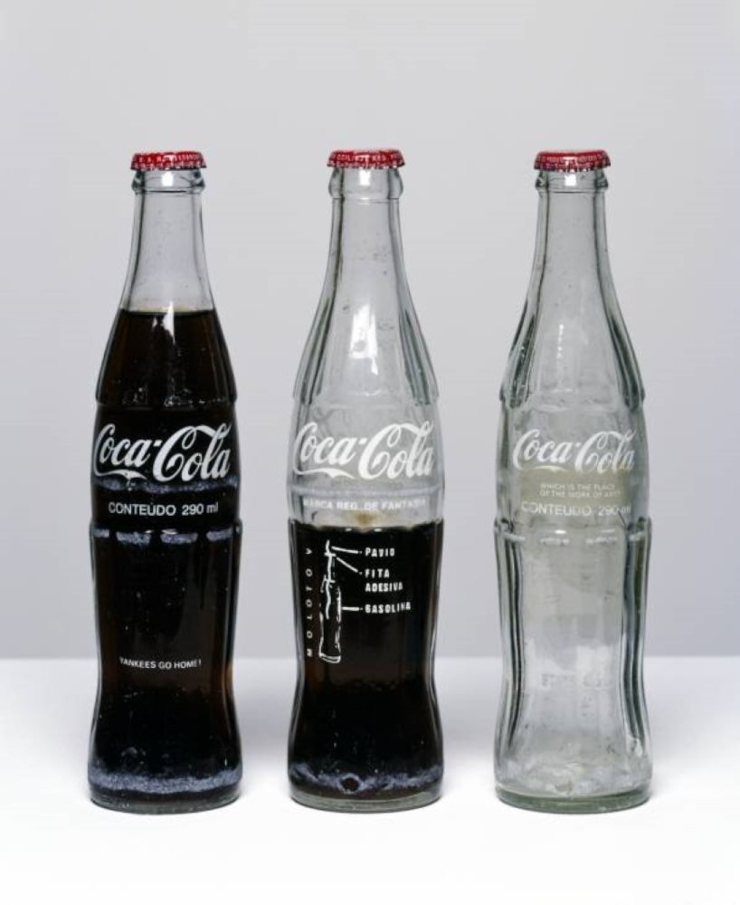

Arte Conceitual
Arte Conceitual, o que é?
É um movimento que compreende que a ideia por traz de uma obra é mais importante que sua aparência ou as ferramentas que a compõe.

Voltar para primeira página